«Гонки под контролем» — банковские переводы
Исследование многопоточной синхронизации на языке C: от воспроизведения гонки данных (Race Condition) и взаимной блокировки (Deadlock) до корректного решения со строгим сохранением инварианта общей суммы.
1. Постановка задачи
Цель, модель параллельных переводов, инвариант целостности и матрица привязки к лабораторным работам.
1.1. Цель проекта
Разработать на языке C многопоточную программу, моделирующую банковскую систему переводов между счетами. Пройти путь от «сломанной» версии через deadlock к корректному решению, документируя каждый этап работы тестами, логами и скриншотами.
1.2. Модель банковской системы
- N = 10 счетов с начальными балансами
INITIAL_BALANCE = 10 000рублей (общая сумма 100 000 ₽). - M параллельных потоков-клиентов (в базовом тесте 8, в стресс-тесте 16), каждый выполняет K переводов (1 000 или 10 000).
- Операция перевода: снять сумму X со счёта-источника from и зачислить X на счёт-получатель to.
- Окно для гонки: между снятием и зачислением поток может быть вытеснен планировщиком ОС.
1.3. Инвариант (главное требование)
Сумма всех балансов постоянна и строго равна N × INITIAL_BALANCE = 100 000 ₽ в любой момент после завершения всех рабочих потоков. В корректной версии студента расхождение строго равно 0.
1.4. Три версии реализации
| Версия | Файл | Что демонстрирует | Статус |
|---|---|---|---|
| 1. Сломанная | src/bank_broken.c | Операции без мьютексов, race condition — сумма «плывёт» | FAIL (S1) |
| 2. Deadlock | src/bank_deadlock.c | Захват from/to, взаимная блокировка при встречных переводах | HANG (S2) |
| 3. Корректная | src/bank_fixed.c | Единый глобальный порядок (lo < hi), атомарность проверки | PASS (S4–S8) |
1.5. Привязка к лабораторным работам
| ЛБ | Отрабатываемые концепции и навыки |
|---|---|
| ЛБ1 | Структуры, массивы счетов, указатели, пошаговая трассировка состояния памяти. |
| ЛБ2 | Потоки POSIX (pthread), мьютексы, race condition, 4 условия Коффмана, диагностика deadlock. |
| ЛБ3 | Критическая секция, изоляция разделяемых ресурсов, синхронизация Producer-Consumer. |
| ЛБ5 | Динамическая память, Valgrind Memcheck (0 байт утечек), AddressSanitizer (ASan). |
| ЛБ6 | Валидация граничных условий (проверка корректности индексов from/to до обращения к памяти). |
| ЛБ8 | Масштабируемость многопоточного кода, измерение throughput (переводов/сек), профилирование. |
2. Структура проекта
Иерархия каталогов и общесистемный контракт интерфейса src/bank.h.
Иерархия каталогов bank_transfers/
bank_transfers/ ├── src/ │ ├── bank.h # Единый заголовочный файл (интерфейс трёх версий) │ ├── bank_broken.c # Версия 1: без синхронизации (гонка данных) │ ├── bank_deadlock.c # Версия 2: с deadlock (встречные блокировки) │ └── bank_fixed.c # Версия 3: корректное решение (единый порядок) ├── tests/ │ ├── test_bank.c # Модульные и интеграционные тесты T1–T7 │ └── test_t8.c # Дополнительный статистический тест (100 запусков подряд) ├── bench/ │ └── bench_bank.c # Замер производительности и пропускной способности (S8) ├── build/ # Скомпилированные бинарные файлы └── Makefile # Автоматизация компиляции, диагностики и тестов
2.1. Контракт интерфейса src/bank.h
- Функцию
bank_transferразрешено вызывать из любого количества потоков одновременно. - Возврат
0— успешный перевод; возврат-1— недостаток средств или неверные индексы счетов. - После вызова
pthread_joinвсех потоков выполняется равенствоbank_total() == NUM_ACCOUNTS × INITIAL_BALANCE. - Функция
bank_transferне должна приводить к взаимной блокировке (deadlock). - Функция
bank_transferгарантирует отсутствие потери или дублирования средств при вытеснении потока.
3. Набор тестов (tests/test_bank.c)
Чек-лист тестов T1–T7 и матрица ожидаемого/фактического поведения версий.
3.1. Чек-лист тестов
| № | Тест | Что проверяет | Ожидаемый результат |
|---|---|---|---|
| T1 | Инициализация | Все балансы равны INITIAL_BALANCE | bank_total() == 100 000, разница 0 |
| T2 | Один перевод A→B (100) | Корректность списания и зачисления | A = 9900, B = 10100, сумма 100 000 |
| T3 | 1000 переводов (1 поток) | Последовательная работа без гонок | 1000 успешных переводов, сумма 100 000 |
| T4 | 8 потоков × 1000 | Параллельная работа без взаимного влияния | Сумма строго 100 000 (в broken падает) |
| T5 | Недостаток средств | Попытка перевода больше текущего баланса | Возврат rc = -1, балансы целы |
| T6 | Перевод самому себе | Граничный случай from == to | Возврат rc = 0, баланс не изменился |
| T7 | Стресс: 16 × 10 000 | Высокая нагрузка 16 потоков | Сумма 100 000, время выполнения < 30 с |
3.2. Матрица поведения версий из задания
| Версия | T1 | T2 | T3 | T4 | T5 | T6 | T7 |
|---|---|---|---|---|---|---|---|
| bank_broken | OK | OK | OK | FAIL | OK | OK | FAIL |
| bank_deadlock | OK | OK | OK | HANG | — | — | — |
| bank_fixed | OK | OK | OK | OK | OK | OK | OK |
4. Файлы проекта и листинги исходного кода
Все исходные тексты проекта с подсветкой синтаксиса и комментариями.
5. Ход выполнения и доказательства на скриншотах
Скриншоты встроены строго по ходу решения задачи, с терминальными командами и описанием вывода. Нажмите на скриншот для увеличения.
В виртуальной машине Ubuntu 20.04.6 LTS обновлены системные пакеты, установлен набор build-essential, valgrind, gdb. Проверено число ядер процессора: nproc = 4.
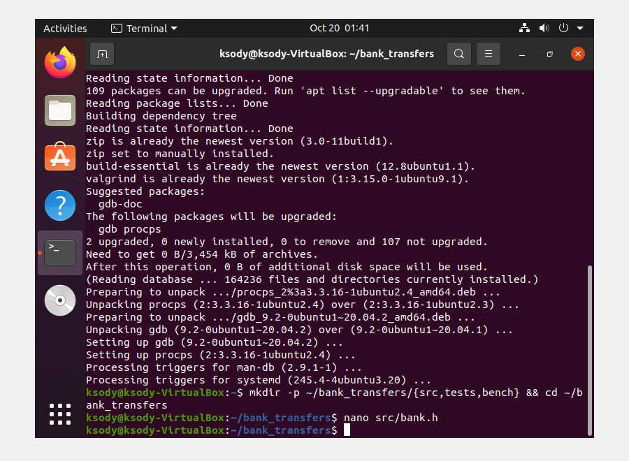
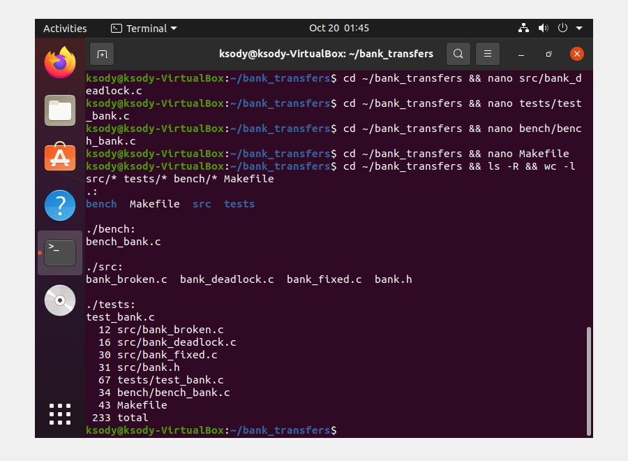
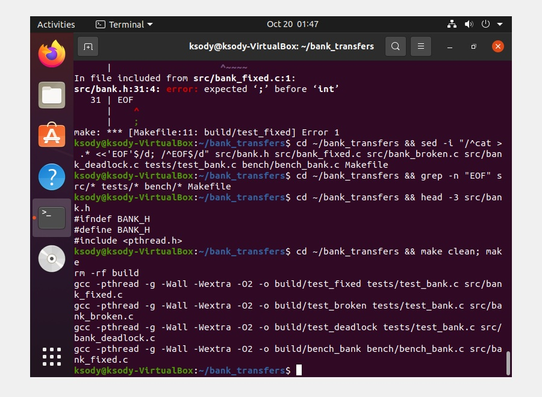
В сломанной версии src/bank_broken.c отсутствуют мьютексы. Проверка balance < amount и операции модификации балансов не атомарны. При 5 повторных запусках инвариант суммы каждый раз нарушается (разница: -3828, +6601 и др.).
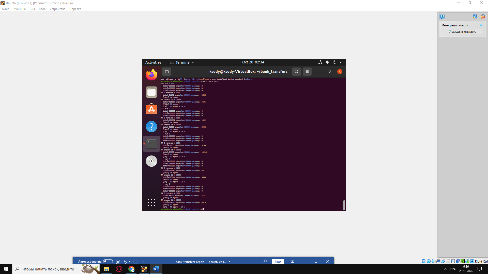
В версии src/bank_deadlock.c мьютексы захватываются в порядке from → to. При встречных параллельных переводах возникает цикл в графе ожидания ресурсов (выполняются все 4 условия Коффмана). Программа намертво зависает на тесте T4.
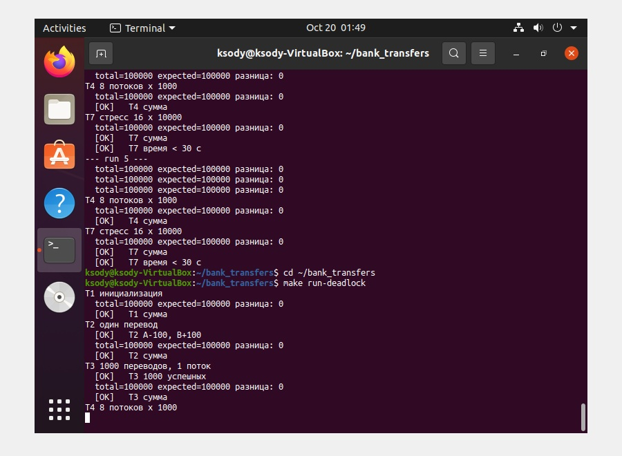
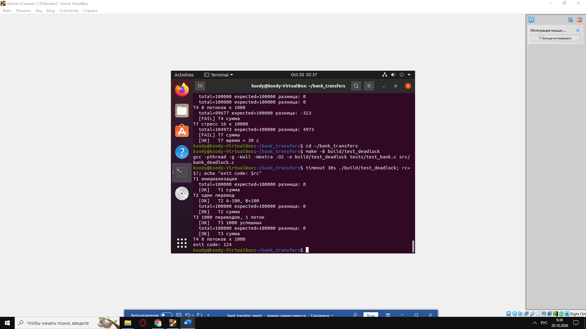
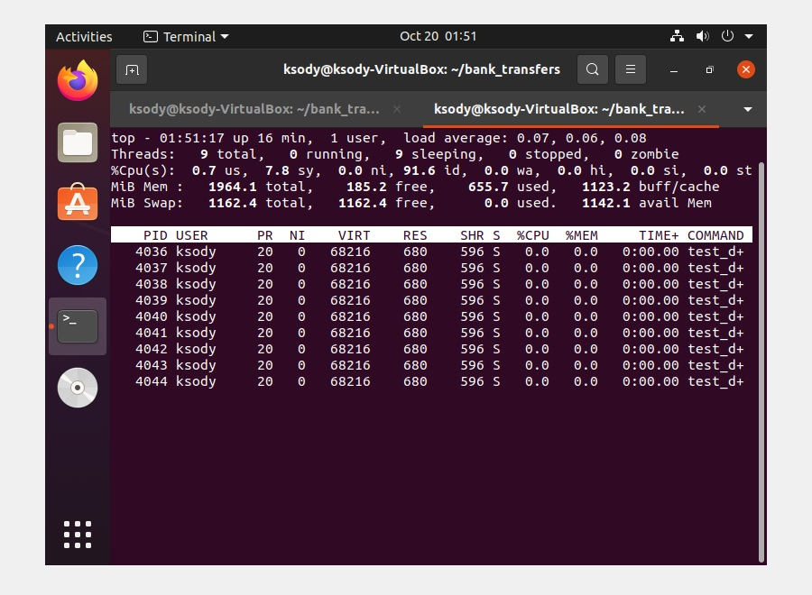
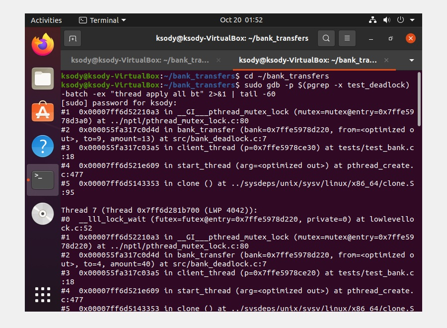
В корректной версии src/bank_fixed.c захват мьютексов упорядочен: сначала блокируется счёт с меньшим индексом lo = min(from, to), затем с большим hi = max(from, to). Проверка баланса и операция перемещения средств выполняются строго внутри критической секции.
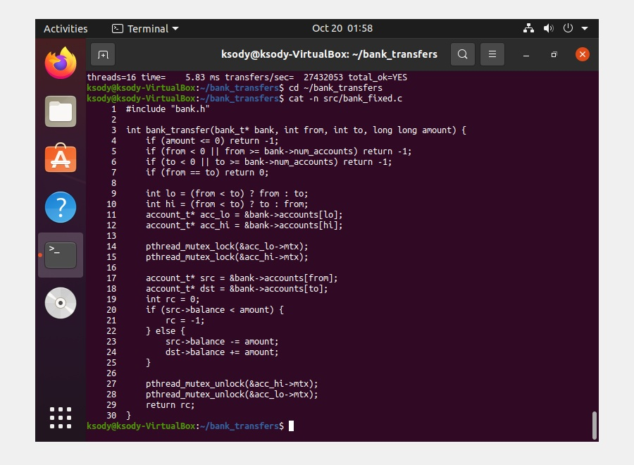
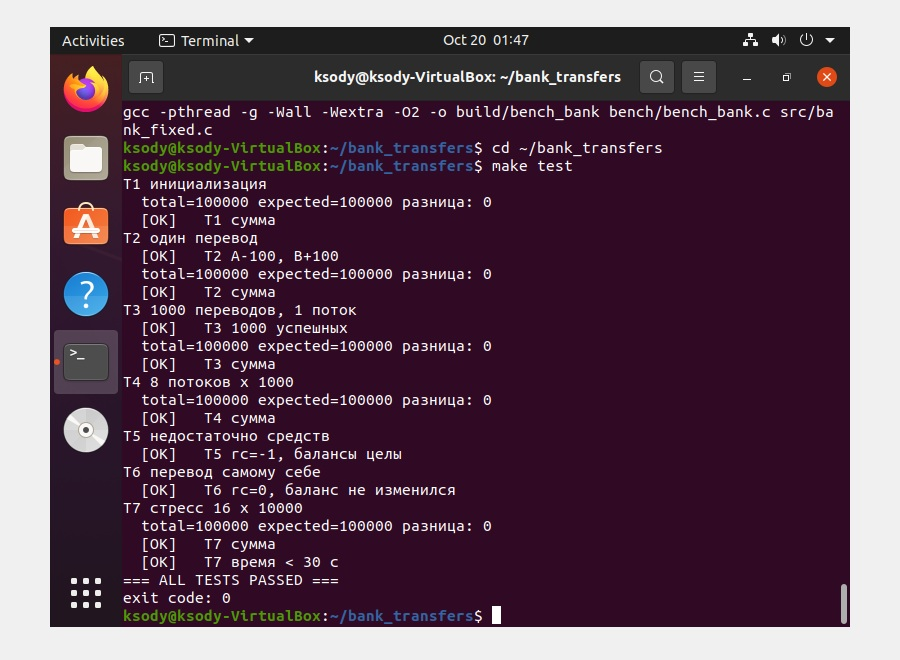
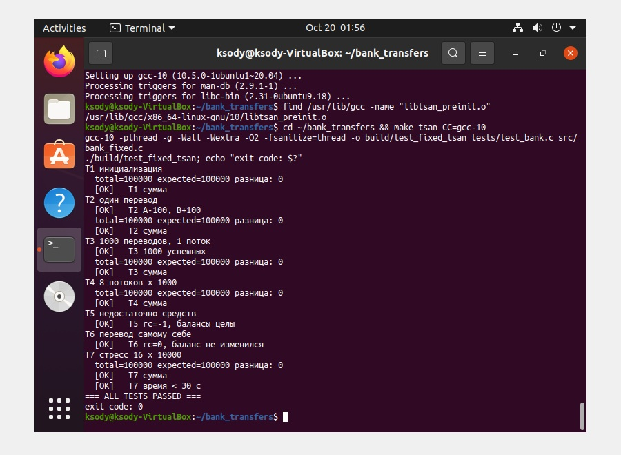
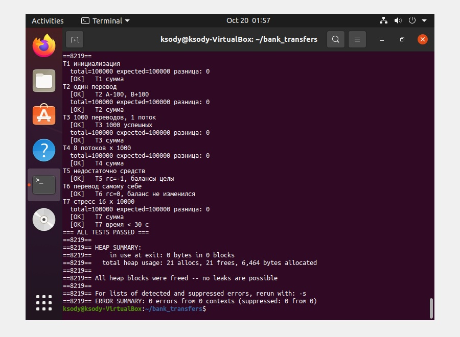
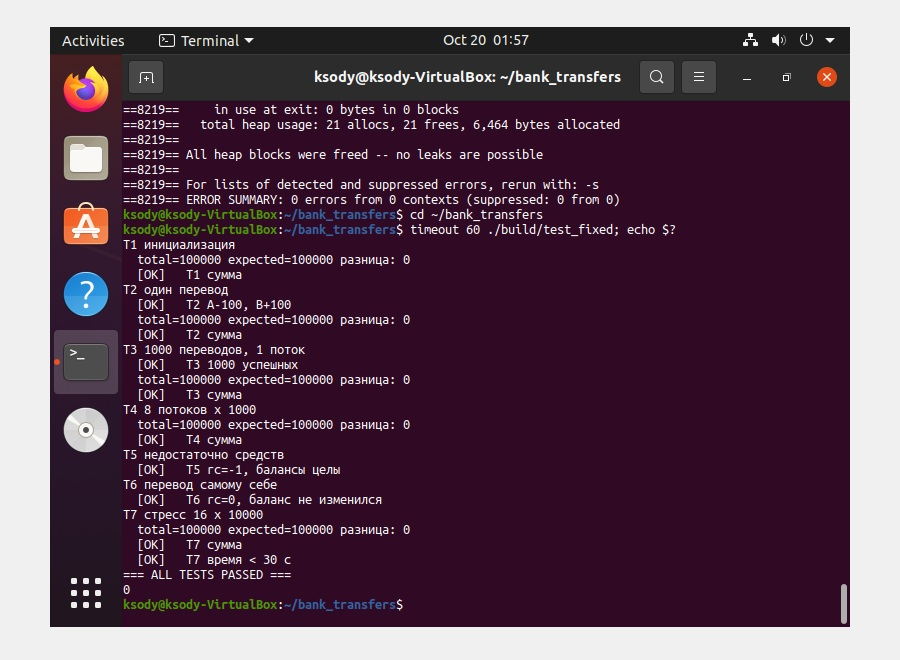
Проведено профилирование пропускной способности системы на 1, 2, 4, 8 и 16 рабочих потоках с объёмом по 10 000 переводов на поток. Во всех замерах итоговая сумма осталась строго корректной (total_ok=YES).
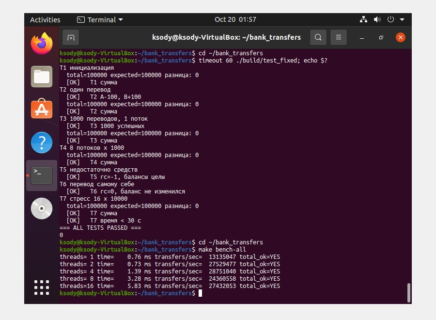
Тестовая утилита tests/test_t8.c прогоняет 100 независимых сессий по 8 потоков × 1000 переводов. В сломанной версии инвариант нарушился в 100 из 100 запусков (из-за расширенного окна гонки). В корректной версии — 0 нарушений из 100.
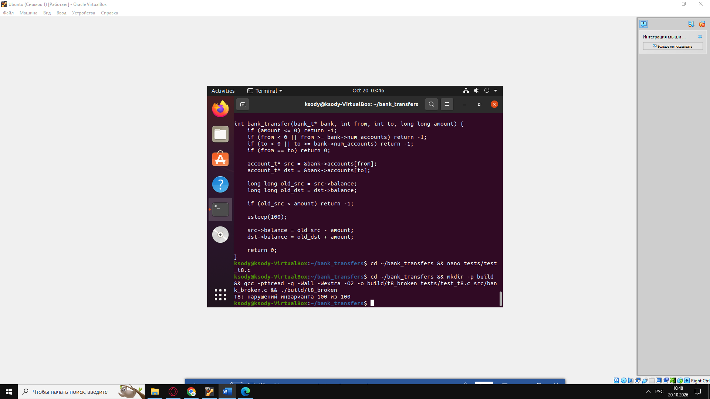
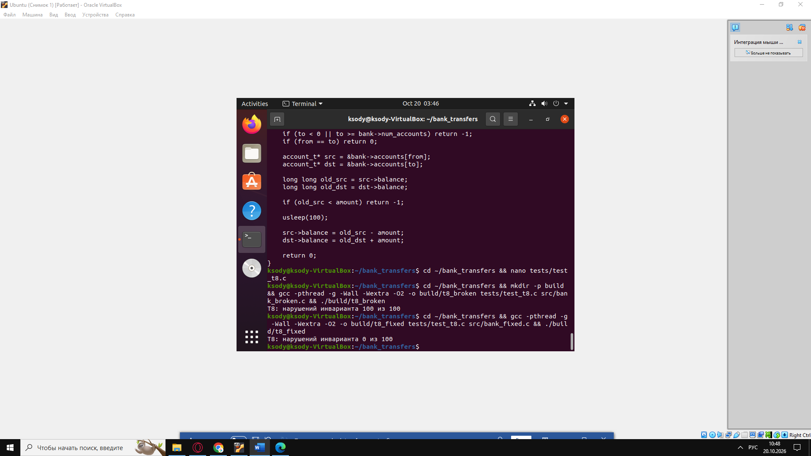
6. Аналитические выводы
Глубокий теоретический и практический разбор причин гонки, взаимной блокировки и эффективности решения. Нажмите на любой раздел, чтобы развернуть или свернуть подробности.
6.1.1. Анализ гонки (Версия 1: bank_broken.c)
Что произошло: Итоговая сумма балансов после многопоточных тестов T4 и T7 не равна 100 000 и непредсказуемо меняется от запуска к запуску (например, 96 172 и 106 601 на скриншоте S1).
Причина: Проверка src->balance < amount и последующая модификация балансов src->balance -= amount / dst->balance += amount не являются атомарными операциями. На машинном уровне вычитание состоит минимум из 3 инструкций: чтение переменной из памяти в регистр (LOAD), модификация регистра (SUB) и запись обратно в память (STORE). Если поток 1 вытеснен после LOAD, а поток 2 успевает изменить баланс, запись потока 1 затрёт результат потока 2 (Lost Update).
Следствия: Балансы могут становиться отрицательными вопреки проверке, деньги безвозвратно теряются или дублируются из воздуха.
6.1.2. Анализ взаимной блокировки (Версия 2: bank_deadlock.c)
Что произошло: Программа зависает на тесте T4. Утилита timeout 30 завершает её с кодом 124. Диагностика в top показывает нагрузку CPU ≈ 0.0%, а трассировка GDB показывает остановку всех потоков на системном вызове pthread_mutex_lock.
В версии bank_deadlock.c одновременно выполняются все четыре условия Коффмана:
- 1. Взаимное исключение: Каждый мьютекс счёта (mtx) может находиться во владении только одного потока одновременно.
- 2. Удержание и ожидание: Поток захватывает мьютекс счёта
fromи, удерживая его, пытается захватить мьютексto. - 3. Отсутствие вытеснения: Захваченный мьютекс нельзя отобрать силой; он освобождается только самим владельцем через unlock.
- 4. Циклическое ожидание: Поток 1 (A→B) удерживает A и ждёт B; Поток 2 (B→A) удерживает B и ждёт A. Замкнутый цикл ожидания.
6.1.3. Анализ решения (Версия 3: bank_fixed.c)
Архитектурное решение: Введение глобального линейного порядка блокировки ресурсов. Вместо порядка вызова (from → to) программа всегда сначала блокирует счёт с меньшим индексом lo = min(from, to), а затем с большим hi = max(from, to).
Разрушение цикла Коффмана: Поскольку все потоки захватывают ресурсы строго в порядке возрастания индексов счетов, ситуация, когда поток держит старший индекс и пытается захватить младший, исключена. Граф владения ресурсами является ациклическим (DAG), поэтому deadlock невозможен.
Защита от TOCTOU: Проверка баланса src->balance < amount вынесена строго внутрь критической секции после захвата обоих мьютексов.
6.1.4. Трассировка одного перевода A → B (ЛБ1)
Интерактивная модель выполнения перевода 100 со счёта A (0) на счёт B (1) при начальных балансах 10 000 ₽.
- 0Начало: Счета не заблокированы, сумма 20 000 ₽
- 1lock(A): Захват счёта 0 (младший индекс lo=0)
- 2lock(B): Захват счёта 1 (старший индекс hi=1)
- 3Проверка баланса: 10 000 ≥ 100 — условие истинно
- 4A −= 100: Списание (сумма временно 19 900 ₽, деньги «в полёте»)
- 5B += 100: Зачисление (сумма восстановлена до 20 000 ₽)
- 6unlock(B): Освобождение счёта 1
- 7unlock(A): Освобождение счёта 0 — перевод завершён
6.1.5. Производительность и масштабируемость (S8)
Реальные замеры производительности из bench_bank.c на 4-ядерном процессоре виртуальной машины:
| Потоки | Время (мс) | Переводов / сек | Инвариант |
|---|---|---|---|
| 1 поток | 0.76 мс | 13 135 047 | YES |
| 2 потока | 0.73 мс | 27 529 477 | YES |
| 4 потока (Пик) | 1.39 мс | 28 751 040 | YES |
| 8 потоков | 3.28 мс | 24 360 558 | YES |
| 16 потоков | 5.83 мс | 27 432 053 | YES |
Вывод: До 4 потоков пропускная способность растёт пропорционально числу ядер. При 8 и 16 потоках прирост прекращается из-за lock contention (конкуренции за 10 мьютексов счетов), cache-line bouncing (перемещения строк кэша между ядрами) и затрат на переключение контекста.
6.1.6. Общий вывод и академическая строгость (Раздел 6.2)
Инвариант постоянства суммы — главный критерий корректности. Применение мьютексов само по себе создаёт риск дедлока, если отсутствует дисциплина упорядочивания. Единый глобальный порядок захвата мьютексов исключает циклы в графе ожидания. В отчёте отсутствуют голословные фразы «программа работает» (все выводы подкреплены числами), дедлок разобран через 4 условия Коффмана, а влияние блокировок подтверждено замером S8.
7. Ответы на вопросы для отчёта и защиты
Все 22 контрольных вопроса структурированы по подразделам с возможностью сворачивания и разворачивания.
7.1. Теоретические вопросы (1–10)
1. Что такое race condition? Приведите пример из проекта.
src/bank_broken.c потоки читают баланс счёта, проверяют его и уменьшают без синхронизации. Если два потока прочитали начальный баланс 10 000 одновременно, оба списывают средства, перетирая запись друг друга, и баланс уменьшается лишь на одну транзакцию вместо двух (Lost Update).
2. Почему counter++ и balance -= amount не атомарны? Из каких шагов они состоят?
3. Перечислите четыре условия Коффмана. Какие из них выполняются в bank_deadlock.c?
bank_deadlock.c выполняются одновременно все 4 условия, что делает возникновение взаимной блокировки гарантированным при наличии встречных потоков (A→B и B→A).
4. В чём различие между deadlock и starvation?
При starvation (голодании) система в целом функционирует и совершает работу, но конкретный поток не получает доступ к ресурсу из-за нечестной дисциплины планирования или постоянного опережения другими потоками.
5. Почему единый порядок захвата мьютексов устраняет deadlock?
6. Что такое TOCTOU? Где он возникает при выносе проверки баланса?
if (src->balance >= amount) ДО захвата мьютексов, сторонний поток успеет снять деньги между проверкой и списанием, и баланс уйдёт в минус.
7. Почему from == to требует отдельной обработки?
if (from == to) return 0; поток попытается дважды захватить один и тот же мьютекс pthread_mutex_t (по умолчанию нерекурсивный PTHREAD_MUTEX_NORMAL) и заблокирует сам себя на втором вызове lock.
8. Чем pthread_mutex_lock отличается от pthread_mutex_trylock?
pthread_mutex_lock блокирует вызывающий поток и переводит его в сон до момента освобождения мьютекса.pthread_mutex_trylock является неблокирующим вызовом: если мьютекс свободен, он захватывается (возврат 0); если занят — немедленно возвращает ошибку EBUSY, не усыпляя поток.
9. Что такое lock convoy? Как он проявляется при 16 потоках в S8?
10. Почему bank_total() вызывается только после join всех потоков?
bank_total() суммирует балансы без блокировки всех 10 счетов. Вызов её во время работы потоков сам создаст состояние гонки и вернёт промежуточную сумму («деньги в полёте»). Вызов после join гарантирует статичность всех счетов.
7.2. Практические вопросы и фрагменты кода
1. Что произойдет, если в bank_fixed.c изменить порядок захвата на «сначала from, потом to»?
bank_deadlock.c. При параллельных встречных переводах возникнет взаимная блокировка и зависание тестов T4 и T7 по тайм-ауту 124.
2. Как избежать deadlock через pthread_mutex_trylock без сортировки индексов?
int bank_transfer_trylock(bank_t* b, int from, int to, long long amt) {
if (from == to) return 0;
account_t *src = &b->accounts[from], *dst = &b->accounts[to];
for (;;) {
pthread_mutex_lock(&src->mtx);
if (pthread_mutex_trylock(&dst->mtx) == 0) break; // Успех
pthread_mutex_unlock(&src->mtx); // Сброс первого
sched_yield(); // Уступаем ЦП
}
int rc = (src->balance >= amt) ? (src->balance -= amt, dst->balance += amt, 0) : -1;
pthread_mutex_unlock(&dst->mtx);
pthread_mutex_unlock(&src->mtx);
return rc;
}
3. Реализация функции безопасного снимка балансов bank_snapshot()
void bank_snapshot(bank_t* bank, long long out[NUM_ACCOUNTS]) {
int n = bank->num_accounts;
for (int i = 0; i < n; i++) pthread_mutex_lock(&bank->accounts[i].mtx);
for (int i = 0; i < n; i++) out[i] = bank->accounts[i].balance;
for (int i = n - 1; i >= 0; i--) pthread_mutex_unlock(&bank->accounts[i].mtx);
}
7.3. Вопросы «на подумать»
1. В реальном банке перевод — это транзакция. Как сделать откат (rollback)?
2. 1 000 000 счетов и 16 потоков: один глобальный мьютекс или мьютекс на каждый счёт?
3. Почему from и to проверяются до захвата мьютексов?
pthread_mutex_lock по невалидному указателю, вызывающему крах программы (Segmentation Fault).
9. Чек-лист частых ошибок (Предотвращены в проекте)
Верификация работы по списку типичных дефектов из раздела 9 PDF:
| Типичная ошибка студентов | Как решено в моём проекте | Статус |
|---|---|---|
| 1. Версия 3 без единого порядка («иногда проходит») | Глобальный порядок lo < hi, проверен стресс-тестом T7 (160 000 переводов) | OK |
| 2. Захват без unlock при ошибке return -1 | unlock выполняется всегда в конце функции до возврата | OK |
| 3. Проверка баланса вне критической секции (TOCTOU) | Проверка баланса находится строго внутри критической секции под обоими мьютексами | OK |
| 4. from == to без обработки (самоблокировка) | В начале функции стоит if (from == to) return 0; | OK |
| 5. bank_total() во время работы потоков | Подсчёт суммы вызывается строго после вызовов join | OK |
| 6. Скриншот S1 с одним запуском | На скриншоте S1 зафиксировано 5 независимых запусков с разными дельтами | OK |
| 7. Запуск дедлока без тайм-аута (терминал висит) | Использована утилита timeout 30 с кодом завершения 124 | OK |
| 8. Отсутствие анализа Коффмана | Детально разобраны все 4 условия и разрыв цикла | OK |
10. Порядок сдачи и материалы проекта
Отчётные материалы оформлены строго по регламенту кафедры: